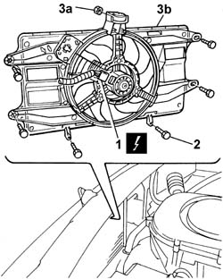
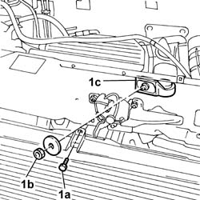
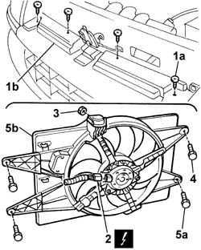
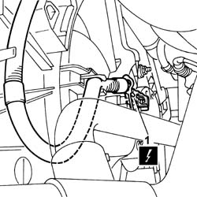
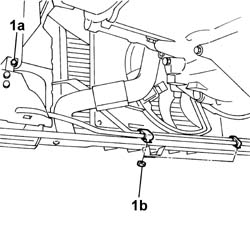
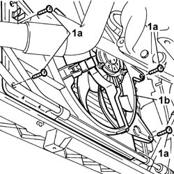

1088E10 radiator cooling fan - r + r
- Path
- Procedures > 10 ENGINE > 1088 ENGINE COOLING > 1088E COOLANT TEMPERATURE CONTROL DEVICES > 1088E10 radiator cooling fan - r + r
- Kind
- repair procedure (removal / refitting; the operation number is the code)
- Applies to
- all engines; all production periods
- Interactive page
- https://sloeber94.github.io/elrnDB-fDbl/en/#/2584316
Applies to: all engines; all production periods
 Removing
Removing
 Refitting
RefittingPlace the car on a ramp.
7055B54 under-engine guard - r r
Disconnect the battery negative terminal.
1. Disconnect the electric fan connection and position the wiring to one side.
 | Name | Connector |
|---|---|---|
1 | Engine electric fan motor | N11 |
Open the band and release the lower engine coolant pipe.
2. Undo the bolts fixing the fan to the radiator.
3. Undo the nut (3a) fixing the fan to the upper crossmember and remove the engine fan (3b).

Applies to: all engines; all production periods
Removing
RefittingPlace the car on the ramp.
Disconnect the battery negative terminal.
| Name | Connector |
|---|---|---|
- | Battery | A1 |
5530B52 Battery DRIP TRAY/SUPPORT - R.R.
1048A32 sleeve from air cleaner to intake manifold - r + r
1048A10 air cleaner filtering element - replace
7055B54 under-engine guard - r r
1. Undo the bolt (1a) securing the fan to the radiator, undo the nut (1b) on the central crossmember, then remove the support (1dc) securing the fan to the front crossmember.

Applies to: all engines; all production periods
Removing
Refitting1048A10 air cleaner filtering element - replace
Place the car on a ramp.
7055B54 under-engine guard - r r
Lower the lift.
1. Undo upper retaining bolts (1a) of front bumper (1b) in order to gain access to the underlying radiator - fan retaining bolt.
2. Disconnect the electric fan connection and position the wiring to one side
| Name | Connector |
|---|---|---|
2 | Engine electric fan motor | N11 |
3. Undo the nut securing the fan to the upper beam.
4. Undo the upper bolts securing the fan to the radiator.
Raise the lift.
5. Undo lower bolts (5a) and remove fan (5b) from the bottom of the engine bay.

Applies to: all engines; all production periods
Refitting
RemovingPosition the fan and secure it using the nut and bolts.
Connect the electrical connector.
| Name | Connector |
|---|---|---|
- | Engine electric fan motor | N11 |
Position the engine coolant pipe and tighten the securing band.
Connect the battery negative terminal.
7055B54 under-engine guard - r r
Remove the vehicle from the ramp.
Applies to: all engines; all production periods
1. Raise the car, disconnect the fan's electrical connection and release the wiring from the retaining clips.
| Name | Connector |
|---|---|---|
1 | Engine electric fan motor | N11 |

Applies to: all engines; all production periods
Refitting
RemovingFit the fan and secure it using the lower retaining bolts.
Lower the lift.
Tighten the fan retaining bolts and nut.
Connect the electrical connector.
| Name | Connector |
|---|---|---|
- | Engine electric fan motor | N11 |
Tighten the upper bolts securing the front bumper.
7055B54 under-engine guard - r r
1048A10 air cleaner filtering element - replace
Remove the vehicle from the ramp.
Applies to: all engines; all production periods
1. Undo the bolt (1a) and nuts (1b) securing the power steering pipes. Move the pipes partially aside to facilitate the subsequent removal of the fan.

Applies to: all engines; all production periods
1. Undo the attachments (1a) and remove the fan (1b) from the bottom of the car.

Applies to: all engines; all production periods
Refitting
RemovingCheck the condition of the fan.
Fit the fan and secure it using the bolts.
Place the power steering pipes in their original positions, then secure them using the nuts and bolt.
Connect the fan's electrical connection.
| Name | Connector |
|---|---|---|
- | Engine electric fan motor | N11 |
Secure the wiring to the retaining clips.
Fit the fan - radiator mounting in the engine compartment and tighten the nut securing it to the front crossmember.
Tighten the nut securing the fan mounting to the radiator.
7055B54 under-engine guard - r r
1048A10 air cleaner filtering element - replace
1048A32 sleeve from air cleaner to intake manifold - r + r
5530B52 Battery DRIP TRAY/SUPPORT - R.R.
Connect the battery negative terminal.
| Name | Connector |
|---|---|---|
- | Battery | A1 |
Remove the car from the ramps.
Topics linked from this page (6)
- 1048A10 air cleaner filtering element - replace
- 1048A32 sleeve from air cleaner to intake manifold - r + r
- 5530B10 battery - r+r
- 5530B52 Battery DRIP TRAY/SUPPORT - R.R.
- 7055B54 under-engine guard - r r
- 7210E10 R.R. FRONT BUMPER